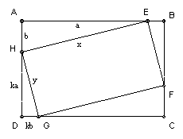

Ali Baba has a rectangular piece of carpet. He finds that if he lays if flat on the floor of either of his storerooms then each corner of the carpet touches a different wall of the room. He knows that the storerooms have widths 38 and 50 feet and the same (unknown but integral) length. What are the dimensions of the carpet?
Solution

Answer: 25 x 50.
Take the carpet to be EFGH and a storeroom to be ABCD, with E on AB, F on BC etc. Take HE = x, EF = y, AE = a, AH = b, DH = ka. Triangles AEH and CGF are congruent, and triangles BEF and DGH are congruent, and triangles AEH and BEF are similar. k is the similarity factor, so BE = DG = kb, BF = DH = ka. Also y = kx. AD is the unknown width q, AB = 38 or 50. Note that a, b take different values in the two cases, but x and y are the same. Hence k = y/x is also the same in the two cases.
Take AB = 50. Then a + kb = 50, ka + b = q. Hence kq - 50 = (k2 - 1)a, 50k - q = (k2 - 1)b. Similarly, if AB = 38, then kq - 38 = (k2 - 1)a, 38k - q = (k2 - 1)b. But x2 = a2 + b2. So (kq - 50)2 + (50k - q)2 = (kq - 38)2 + (38k - q)2. So -100kq + 2500 + 2500k2 - 100kq = -76kq + 1444 + 1444k2 - 76kq. So 1056k2 - 48kq + 1056 = 0, or 22k2 - kq + 22 = 0, or kq = 22(1 + k2) (*)
We also have x2(k2 - 1)2 = (kq - 50)2 + (50k - q)2 = (k2 + 1)(q2 + 2500) - 200kq = (k2 + 1)(q2 - 1900), using (*).
So x2(k2 - 1)k2 = (k2 + 1)( (22k2 + 22)2 - 1900k2), using (*), = (k2 + 1)(484k4 - 932k2 + 484). If we divide by k8 and put k' = 1/k, we get the same equation for k'. So if k is a solution, then 1/k is also a solution.
k = y/x, which is rational. Put k = c/d, where c and d are coprime integers. Then we get x2c2(c2 - d2)2 = c2(484c4 - 448c2d2 - 448d4) + 484d6. Hence c2 divides 484d6. But c and d are coprime, so c must divide 22. Since k' is also a solution of the equation, d must also divide 22. So each of c, d is one of 1, 2, 11, 22. That implies k must be 1, 2, 1/2, 11, 1/11, 22, 1/22, 2/11 or 11/2. But k and 1/k give the same solution (with x and y interchanged), so we need only consider k = 1, 2, 11, 22, 11/2.
k = 1 does not work (substituting into the equation for x, we get 0 = 1).
k = 2 gives (from 22k2 - kq + 22 = 0), q = 55, then x = 25 (from the equation for x) and then y = 50.
k = 11 gives q = 244 = 4.61. But consider x2(k2 - 1)2 = (k2 + 1)(q2 - 1900). It is easy to check that 61 divides rhs, but not 612, so the rhs is not a square. Contradiction (since the lhs is a square). So k = 11 does not give a solution.
k = 22 gives q = k2 + 1 = 485 = 5.97. So we have the same argument with 97 instead of 61, and k = 22 does not give a solution.
k = 11/2 gives q = 125, k2 + 1 = 125/4, k2 - 1 = 117/4. So we get x21172 = 4.55(252 - 76). But 5 divides the rhs to an odd power, so k = 11/2 does not give a solution.

© John Scholes
jscholes@kalva.demon.co.uk
28 Dec 2002
Last corrected/updated 28 Dec 02